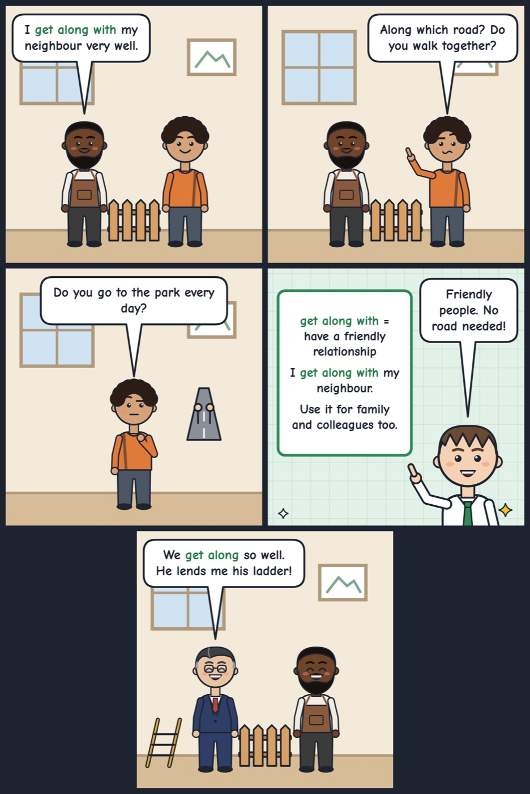

get along with
To have a friendly relationship with someone.
I get along really well with my neighbours.
Tip: Use 'get along with' + a person, and add 'well', 'really well' or 'badly' to say how good the relationship is; 'get on with' means the same in British English.
Hear it in conversation
OlenaHow's the new job? You've been there a month now, haven't you?
KofiYes, and it's going well. The work is fine, but my manager is the best part.
OlenaReally? You always said your last manager was hard to deal with.
KofiHe was. But I get along with this one straight away. We even like the same football team.
OlenaThat makes the office a lot more fun, then.
KofiIt does. I actually look forward to Monday mornings now.
Workbook
1. What does it mean?
In this conversation, what does 'get along with' mean?
2. Fill the gap
My sister and I fought a lot as children, but we much better now that we live in different cities.
3. Choose the best reply
Amira: Are you nervous about sharing a flat with Diego?
4. Your turn: speak
Tell me about someone you work or study with. Do you get on well with them?
Show an example answer
I share a project with a classmate called Marta, and we get along really well. We have similar ideas about how to plan our time, so we hardly ever argue. It makes studying together a lot less stressful.
Answer key: get along with
- 1. B. Have a friendly, easy relationship with someone
- 2. get along
- 3. C. Not really. We get along well, so I think it'll be easy.
- 4. Example: I share a project with a classmate called Marta, and we get along really well. We have similar ideas about how to plan our time, so we hardly ever argue. It makes studying together a lot less stressful.
See it in a comic
